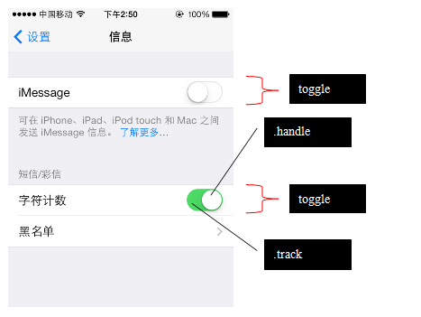

开关 : .toggle input[type="checkbox"] 开关通常用来设置两种状态 - 开启和关闭： 例如：  正如上图中所见，开关的可视部件包括两部分：滑轨（.track）和手柄（.handle）。 ionic使用如下HTML模板创建开关组件：
注意：开关也有配色方案样式：.toggle-{color}，用来改变滑轨的背景色。
设置
信息
iMessage
短信/彩信
字符计数
黑名单